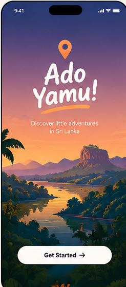
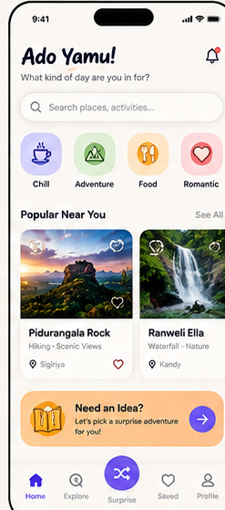
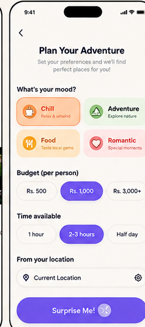
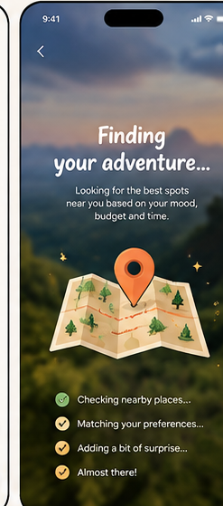
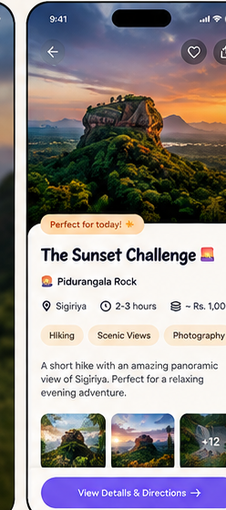
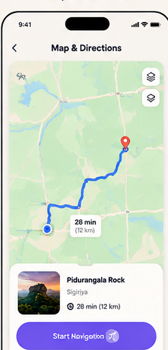
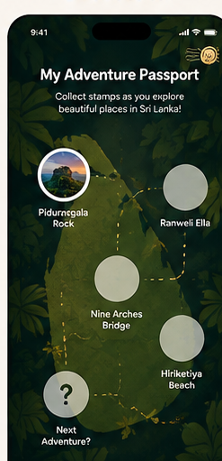
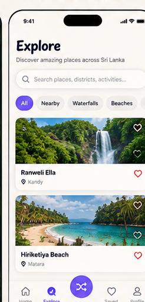
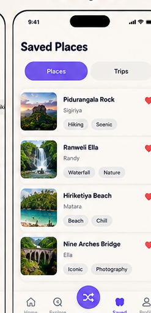
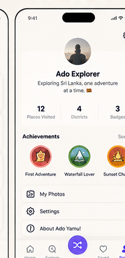

10 individual iPhone UI screens • Original design pixel crops • Click a screen to open its PNG.Extracted scene photos and icons are in 03_Extracted_Images_and_Icons.
03_Extracted_Images_and_Icons









